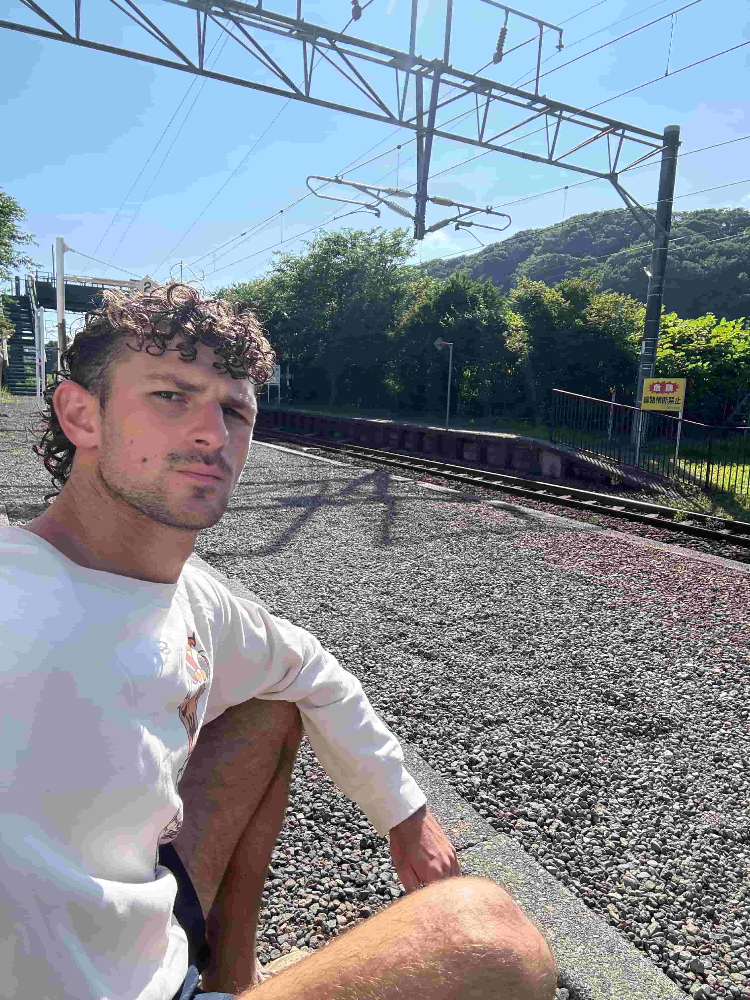
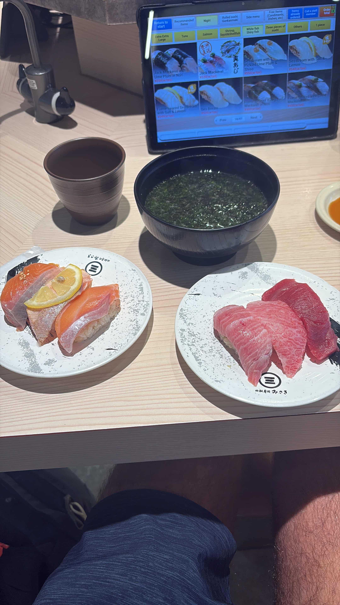
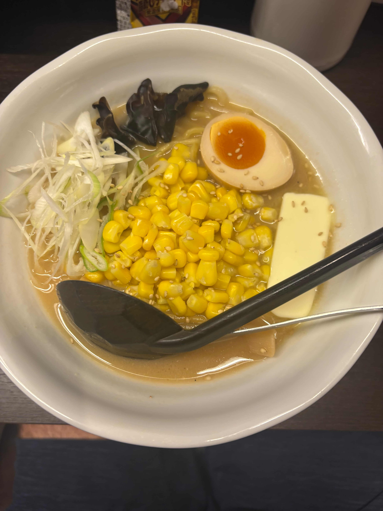
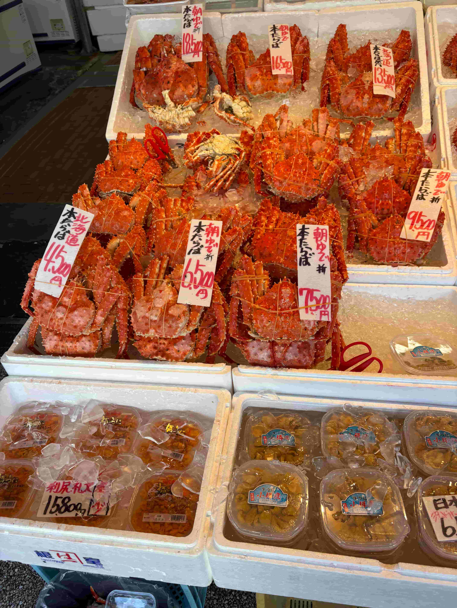

Sunday, July 13th, Noboribetsu, Japan
An onsen is a natural hot spring in Japan. By law—specifically the Hot Springs Act—an onsen is defined as hot water, mineral water, or water vapor that naturally springs from underground at a temperature of at least 25°C (77°F) and contains certain minerals. The water is geothermally heated, often due to volcanic activity, though it can also come from deep underground aquifers or fossilized seawater. Japan classifies onsen waters into ten types based on mineral content: simple onsen, carbon dioxide (CO₂), bicarbonate (HCO₃), chloride (Cl), iodine-containing (added in 2014), sulfate (SO₄), iron (Fe), sulfur (S), acidic (low pH), and radon (Rn). Soaking in an onsen is one of the most special experiences in Japan, and here in Noboribetsu—one of the country’s top onsen towns—you can find five of the ten types in one place. Today I spent two blissful hours hopping between various hot and cold pools, steam rooms, saunas, and both indoor and outdoor baths. Each mineral has different healing properties, from lowering blood pressure to softening the skin to helping with chronic conditions. Personally, I love the sulfur springs—milky white in color, with a strange smell—and said to help with hardening of the arteries and chronic dermatitis. Mineral baths and sauna rituals have become some of my favorite health and wellness practices, and it all started here in Japan about a year and a half ago. Since then, I’ve explored incredible facilities in Korea, Iceland, Georgia, Laos, Cambodia, China, Hungary, and even a Russian-style banya in Dallas. I like to think I’m on the path to becoming an international sauna and bathhouse expert, though I still need to visit Finland—the birthplace of sauna culture—before I can truly be certified. In Japan, men and women bathe separately in onsens. As always, you remove your shoes before entering, store your belongings in a locker, and keep the key on your wrist. Then you strip naked. Usually, you are hit with a bunch of 60+ year old Japanese uncircumcised penises all around you. Everyone is totally comfortable. At first, it’s a little weird, but after a few times, it becomes freeing. Before entering any bath, you need to wash yourself—there are small stools lined up in front of mirrors with hand-held showerheads, soap, shampoo, conditioner, and a bucket for rinsing. Once clean, you’re free to soak and explore. I like to alternate between hot and cold pools, do a sauna session, then cold plunge and chill outside with some tea. Today’s onsen had a sulfur waterfall that poured directly over your head, which felt both healing and mind-opening. There were ultrasonic jacuzzis, full-body reclining tubs, and beautiful minimalist design throughout—clean wooden interiors, soft lighting, and peaceful vibes. Inside the sauna, you’ll find tiered benches for different heat levels. I always pay attention to the details: Is the heat electric or wood-fired? What kind of thermometer is used? Is the timer a clock or an hourglass? Can guests pour water on the coals or is it automated? These things matter. Someday, I’d love to bring a thoughtfully designed sauna and onsen-style experience to the U.S.—inspired by everything I’ve learned from these global traditions.
Saturday, July 12th, Noboribetsu, Japan
Today was a super slow, meditative day—my first full day in rural Japan, far removed from the chaos and stimulation of the city.
It’s almost unsettling to step outside and hear nothing: no cars, no shouting, no buzz of city life—just pure stillness.
And yet, that silence, which should feel normal to us as humans, feels completely foreign.
We’re so used to noise and stimulation that calmness almost feels like a void.
I spent two hours in a peaceful onsen today and took the opportunity to reflect.
I wanted to jot down a few tangible things I’ve learned from this journey. The first one is obvious but still important: quitting your job and traveling to faraway places makes you more comfortable with uncertainty and unfamiliar situations.
I learned how to backflip (shoutout Lieffie), flew in a paramotor, trekked the Himalayas, hunted with tribes in Africa, bought, sold, and rode a motorbike halfway down Vietnam.
Travel forces growth—it pushes you to do things you’d normally never consider. I tried foods I’d never even heard of before—like soursop—and challenged my comfort zone.
A few years ago, when I came to Asia the first time, I often felt out of place, constantly aware of the stares or how different I looked. Now, I don’t feel out of place anywhere. The world feels like one giant shared home; we’re all just humans.
And surprisingly, most people are incredibly kind and willing to help—well, except maybe the Japanese. Another lesson is the power of clean eating. I felt amazing waking up to fresh fruit smoothies with produce picked from the trees nearby. In the U.S., it’s scary how processed and disconnected our food has become. Here, eating naturally and intentionally gave me a different kind of energy—clean and vibrant.
Another takeaway: don’t tell white lies. Be authentic. In the beginning, when people criticized America, I’d tiptoe around the topic. But over time, I became unapologetically myself. And finally, I’ve been reflecting on the modern-day feudal system—and how to live like a 21st-century aristocrat. Traveling exposes you to every type of person: the partygoers, the yogis, the digital nomads, the aimless drifters. If you want to be a high-performing, high-value individual in this noisy world, you have to draw clear lines around your life. You need standards. One of mine has effectively been no drinking. That choice has changed my health, mental clarity, and energy. It’s a powerful social and personal signal of self-respect. This trip has helped crystallize so many of these ideas. As I sat today in silence, soaking in the natural hot water, I realized how far I’ve come—not just in distance, but in clarity.

Saturday, July 12th, Noboribetsu, Japan
At the crack of dawn in the savannahs of Tanzania, the Hadzabe hunter-gatherers begin their day. One by one, they step out of their hand-built wooden huts into the crisp morning air, their breath forming clouds in the early light. The fire still smolders from the night before, its embers glowing softly as men gather around it, whispering strategy and sharpening arrows. Children stretch in the dust, women begin sorting berries and roots. There’s no rush—only rhythm. No calendars, no deadlines—only the single, pressing goal: find food.
The air smells like dry earth and woodsmoke. You can hear the distant chatter of birds, the crunch of feet on dirt, the soft thwick of a bowstring being tested. In their eyes, there is no trace of anxiety. No thoughts about taxes or TikToks. Their minds are occupied by the land, by the animals they track, by the shared work ahead. They are present—fully, deeply present.
Contrast this with life back home. In the West, our days begin not with fire and purpose but with the buzzing of our phones. We scroll through other people’s lives before we've even had a sip of water. We answer work emails while brushing our teeth. Notifications, news, texts, calendars, group chats—we’re pulled in a dozen directions before the sun even rises.
People talk endlessly about “work-life balance,” but what does that even mean anymore? Are we meant to split ourselves in two? To juggle health, hustle, happiness, fitness, finances, fun—all before lunch? We brag about being busy and trade productivity hacks like survival tools. The modern brain, hit with constant inputs, rarely rests. And while I won’t dive too far into brain science, it’s no secret our minds weren’t designed for this level of stimulation and fragmentation.
High in the Himalayas, I met a yak herder in rural Nepal. His entire world was his ranch, perched among snow-capped peaks and rolling green hills. He had never left his village, let alone his country. Yet he radiated something rare and grounding: peace. He spent his days tending to his animals, making yogurt and butter from their milk, stacking firewood, sitting quietly in the grass watching clouds drift. No ambition to “scale” anything. No need for external validation. Just a man, some animals, and the rhythm of the mountains.
Witnessing these lives—whether in the savannah or the Himalayas—humbles me. It makes me question the whole machine we’re caught in: chasing money, fame, big dreams, shiny milestones. I do want to make a big impact in this world. I believe in progress, in working hard toward something meaningful. But I’ve started to wonder whether we’ve confused working hard with spinning in circles.
We don’t need another app that promises to 10x our output. We need fewer tabs open—in our browsers and in our minds.
Perhaps the real problem is that we’ve traded depth for speed, and focus for frenzy. Humans didn’t evolve to switch tasks every five minutes. We were designed to move slowly, deliberately. To track a gazelle. To gather. To build. To tend.
What if the discontent so many of us feel isn’t because we’re failing—but because we’re trying to do too much, too fast, in too many directions?
What if stillness is not laziness, but mastery?
I think back to the yak herder again—his steady gaze, the way he stirred his tea. Or the hunter warming his hands at the fire before slipping off into the bush. Their lives aren’t easy. But they are clear.
Maybe we don’t need more pleasure, more novelty, more distraction. Maybe we just need fewer decisions. A smaller radius. A craft to return to. A rhythm we can follow.
Maybe the path forward isn’t in doing more, but in doing less—better.
Friday, July 11th, Shiraoi, Japan
Ok, I’m getting pissed off. I’ve talked about this before—getting the most value for your money—and right now, it’s Friday here in Sapporo, and I still don’t have a place to stay. The cheapest I can find is around $70 a night, which is honestly insane. Traveling has really made me reflect on the value of money, and here are the top three countries where your money stretches the furthest: Vietnam, where you can get healthy, delicious food for two dollars and stay in a room overlooking rice fields for ten; it’s absolutely unmatched. Georgia also offers cheap food and accommodation, with the added bonus of a super affordable and efficient transportation system. Then there’s Thailand—amazing pad Thai for three bucks, cheap stays right on the beach, nothing better. Honorable mentions go to Laos, which is incredibly cheap but lacks the same quality of food and lodging, and Indonesia, which has amazing and healthy food at great prices, but accommodation can be a bit more expensive. Anyway, I’m seriously frustrated with how pricey Japan is, but I remind myself that I’m here exploring—a total blessing. I’m debating whether to stay another night in Sapporo and catch a $20 standing-room baseball game or head to a small coastal town known as one of Japan’s best onsen destinations. I’m leaning toward the adventure, but I need to figure out how to get more cash. A few hours later, after asking around at hostels, hotels, and cafés with no success, I started to feel like there’s something cultural about people here being hesitant to help strangers—maybe the language barrier, maybe just different social norms. Feeling a bit discouraged, I realized I’d have better luck asking a Westerner, someone with better English who might be more willing to help. I spotted two guys around my age walking down the street and asked for help—they generously stopped and agreed. One was a British guy named Elliott, and the other was Swedish. I used Wise to instantly transfer USD to Elliott’s account, and he withdrew yen for me at a 7-Eleven. It felt weird being so helpless and reliant on someone else’s kindness, and yeah, I lost a bit of money in the double currency conversion—this is exactly why we need Bitcoin to take over the world—but Wise seriously saved me. With cash in hand, I jumped on a train to Shiraoi, a rural town I chose only because it had the cheapest hostel I could find in Hokkaido—$21 a night—and it happened to be near a famous onsen town I wanted to check out. As I stepped off the train into this tiny place, I asked myself, what the hell am I doing here? But honestly, I kind of love that feeling—being somewhere totally unfamiliar, with no plan and no idea what I’ll do next. That’s real freedom. I made it to the hostel, which was actually really nice, asked a few questions, and settled in without a clue of what tomorrow holds—and that’s a good thing. It reminded me of high school, when you’d ask your friends, “What are we doing this weekend?” and the answer was always “nothing,” so you’d come up with the craziest ideas to kill time and have fun. Traveling feels like that sometimes. People keep asking me, “What are you doing in northern Japan?” or “What are you going to do in Laos?”—and it almost tricks you into thinking you have to do something. Sure, there are lots of cool activities out there, but after 10 months on the road (and it really hits around month five), you realize that sometimes the only thing there is to do… is just travel.



Wednesday, July 9th, Sapporo, Japan
I made it to the capital of Hokkaido: Sapporo.
Today brought a mix of internal and external realizations. After nearly a year of not watching TV, I saw a screen playing volleyball in the sauna. I was reminded how much of TV, entertainment, and modern comfort is just noise. A distraction. I do like sports and competition though.
There’s free Wi-Fi in the streets here, warm showers with perfect water pressure, and toilets that warm your butt and spray water in your ass. It’s all nice… but is it all worth it?
It makes me wonder if we’re losing something essential. Comfort—especially in the so-called developed world—can be numbing. It makes life too easy, too predictable. We evolved from hardship. There’s value in the struggle, in the cold showers, in unreliable Wi-Fi, in things being out of your control.
Because everything works here. Mostly. And while that's usually framed as a good thing, I can’t help but feel there are some serious drawbacks.
Take cost, for example. The biggest shock so far has been the price of hostel rooms—and even food. In Sapporo, hostel beds are around $40 a night or more. That’s a stark contrast to Southeast Asia, where I’ve slept comfortably for $5. When I was still at my plush tech job a year and a half ago, nothing ever seemed expensive. But now, as a hippie backpacker wandering the world, the price disparities feel absurd.
Sure, I understand the basic economics behind it—GDP, wages, purchasing power—but it doesn’t feel logical. People in the “first world” are often paying more for a lower quality of life: unhealthy food that's overpriced, polluted and noisy cities, chronic homelessness, and a general lack of vitality or vigor. It’s not a good deal.
And that’s what really gets me: I can more easily see myself teaching yoga on a beach in Southeast Asia than clocking in at a corporate office again.
But here’s the catch—I know I have more to give. More intellect to exhaust, more creativity to build with. I’m not meant to just drift around the world high on sunshine and smoothies forever. There’s a deeper calling.
That’s why I’m excited to try my hand at entrepreneurship. I want to create something of value, something meaningful—something that gives me the freedom to curate an international lifestyle while contributing in a way that matters.
For now, Sapporo is just the latest mirror reflecting the trade-offs we all live with. And I’m paying attention.
Wednesday, July 9th, Tokyo, Japan
This morning marked a surprisingly symbolic moment: for the first time in six months, I threw my toilet paper into the toilet instead of a trash can beside it.
Why? Because I’ve just arrived in Japan.
After a string of long layovers, I landed in Tokyo early this morning. I’m now waiting for my connecting flight to Hokkaido, Japan’s northernmost island, where I’ll spend the next few weeks adventuring around. This is my second time in Japan — I first came here about a year and a half ago with my friend Zach, marking my first ever trip to Asia.
From Chaos to Cleanliness
Coming straight from half a year in the wild, raw, beautiful chaos of Southeast Asia, returning to Japan feels like stepping through a portal into an entirely different world.
On my first escalator ride, I instinctively stood wherever I wanted — then quickly realized I needed to shift to the left-hand side, as custom dictates here. That tiny correction reminded me of something I liked the first time around: the order, the structure, the collective respect for shared space.
But this time, after being immersed in the lawlessness and lively unpredictability of Southeast Asia, Japan's quiet obedience and pristine efficiency feel even more surreal.
Everything here is clean. Quiet. Calm. Nobody's speaking loudly. Nobody's making a scene. And while I appreciate the discipline and precision, it’s hard not to notice how socially isolated people are. Everyone keeps to themselves. The technology is designed to serve you efficiently, with as little human interaction as possible.
The Cultural Contrast
What stands out most, though, is the stark cultural contrast between where I’ve been and where I’ve landed.
In Southeast Asia — whether in Hindu, Buddhist, or Muslim-majority countries — religion is the backbone of everyday life. Thousands of years of tradition shape not just the rituals, but the values, the street life, even the architecture.
In Japan, it's different. While Shinto shrines and ancient Buddhist temples dot the landscape, religion doesn’t seem to inform daily life in any overt way. Instead, modern Japan feels like a culture shaped more by technology and systems than by spirituality. Walk around any city and you’ll see Pokémon ads, cashless checkouts, futuristic vending machines, and automated everything. It’s a sleek, sanitized, new kind of culture.
Two Worlds, One Journey
Being back in Japan — now with Southeast Asia in my rearview mirror — makes the contrast even more vivid. I find myself asking: What kind of world do I want to live in? One that’s spiritual, raw, messy, and deeply human? Or one that’s organized, safe, clean, and efficient?
Maybe the best part is getting to bounce between both.
Monday, July 7th, Kuta, Bali, Indonesia
Well folks, I should be writing this from an airplane on the way to Tokyo via Hanoi — but I’m not. I’m in Kuta, Bali. Let me tell you why.
It all really started back in December, over six months ago, when an ATM machine ate my debit card in Bangkok, Thailand. It sucked, because my Chase debit card refunds foreign transaction fees when withdrawing money — but it wasn’t the end of the world. I was able to use my Chase credit card for cash advances over the past six months. It cost me $10 every time I withdrew money — not ideal, but I had to do it.
I called Chase to replace my debit card back then, but it’s incredibly hard to ship a card internationally while backpacking. I have no idea where I’ll be on any given day, and no idea how long it takes to ship a credit card around the world. I tried to time the shipment correctly, but it never worked.
Fast forward to Indonesia, a couple weeks ago — hundreds of dollars down from taking out cash via credit card, but still earning credit card points and still getting the hard cash. Then one day, I lost my wallet — including my credit card and driver’s license. Now I’m cardless in the third world.
However, it turned out to be okay because, surprisingly, most places in Indonesia accept tap (Apple Pay). I made it through the entire country this way — plus with the help of Rachel, who would take out cash for small expenses when needed.
Until today…
Now, a treatise on visas. Indonesia offers a 30-day visa for 500k rupiah, which you can easily obtain on arrival at the airport. It’s straightforward. While planning, I realized I’d overstay the visa by a few days. I’d done the same thing in the Philippines before, paid a small fine via Apple Pay, and it was no big deal.
Indonesia also allows a 30-day extension — or so you’d think.
Two weeks before my visa expired, I tried to extend online, but the website was down. I was on a 4-day, 3-night cruise with no internet connection, so I had to wait. When I returned, I tried again. This time it worked — kind of. I was one day late filing the extension, so they charged me 1.5 million rupiah. Annoying, but manageable.
I got an email saying I needed to visit the immigration office to confirm my extension and take a photo. That felt a little weird, considering how smooth the online process was.
So this morning I go to the immigration office in Flores, expecting it to take five minutes. But they tell me that I selected the wrong immigration office in my application — Lombok, not Flores — and because of that, I’d have to go there to confirm it. I had no idea that was a thing. Nothing told me I’d need to physically go in; not until after payment do they notify you.
So I ask, “Can’t you just take the picture here? Isn’t it all connected?”
They said no — only the office you selected can process the confirmation. Makes no sense to me. You’d think government systems would be integrated. I genuinely believe they set it up like this to screw over foreigners.
Now they give me two options: wait it out or pay the overstay fine — 1 million rupiah per day.
So now I’m paying another 3 million on top of the 1.5 million I already paid to extend a visa that’s now invalid. I’m frustrated, but I remind myself — it’s only money. Part of the journey. Move on.
I take a flight from Flores back to Bali, where I’m supposed to catch my connecting flight to Tokyo. I land with two minutes left before check-in closes. My domestic flight was delayed, and I stood on the hot concrete waiting 20 minutes for a shuttle bus from the plane to the terminal. Stressful, but I just made the check-in.
I go to immigration to pay the overstay fee — 3 million, all in cash.
Since I’ve been tapping everywhere, I assumed I could tap here too. Nope. I’m screwed. I have no debit or credit card to withdraw cash. My flight is already boarding. I start scrambling — asking people if they can help — but I have no way to send them money. Europeans use Revolut. I had no balance on mine. Americans use Zelle or Venmo, but that’s a long shot here.
Time’s up. The flight boards without me.
I accept my fate. Thankfully, the airport staff were kind enough to rebook me for tomorrow — for a cancellation fee. More money, but at least I didn’t have to book a whole new flight. I’ll also owe another 1 million for overstaying one more day.
Now the only mission: Where can I withdraw money with tap?
I knew it was possible — I’d done it before in Cambodia and the Philippines. I asked at least five currency exchange places — no luck. I started stressing out. “How will I get out of Indonesia?”
I walked outside to get a taxi into town. At the airport, a driver tried to charge me 800k rupiah for a 15-minute ride. He said the only place I could withdraw with tap was in Kuta.
I almost did it — I was desperate. But I took a breath, opened Grab, and ran away. The Grab was 8x cheaper.
I arrived in the heart of Kuta, a tourist hub, hunting for the mythical golden tap. I asked 2–3 exchange places — again, no dice.
Then, a random motorbike guy came up and asked what was wrong. I explained my situation. He said he knew a place. I was skeptical — last thing I wanted was to get robbed. He knew I was desperate and would be withdrawing a lot of cash.
We drove to one place — no luck. Then further out of the city. I got nervous but surrendered to the moment.
Finally, we found a spot that could do it — for a 7% fee. I was exhausted and hopeless. I had to do it. I withdrew what I needed to pay immigration tomorrow.
And you know what? The motorbike guy turned out to be super helpful and kind.
In general, Asian cultures go above and beyond to help foreigners in need. It’s one of the most refreshing and beautiful things about traveling here. I want to be that kind of person — to help when someone needs it.
So now, I’m in a hostel in Kuta, Bali. Hopefully flying to Sapporo, Japan tomorrow.
Any lessons here?
Not all travel is glamorous.
Take visa rules seriously.
Check the fine print.
It’s only money — you can always make more.
Sunday, July 6th, Flores, Indonesia
Today is my last day in Indonesia.
I arrived in Flores from Lombok via a 4-day, 3-night cruise with the company Wanua. I had previously done a 3-day, 2-night cruise between islands in the Philippines and loved it, so I was excited for this one in Indo. This time, we slept on the boat every night instead of camping on small islands.
There were about 40 people on the cruise—mostly British, some Dutch, some French, and a couple of Americans. Most nationalities stuck to themselves.
The stops along the four days were incredible. The highlight for me was swimming with whale sharks. I’ve snorkeled a lot on this trip and wasn’t overly optimistic about this experience, but snorkeling with whale sharks turned out to be one of my favorite moments of the entire journey.
I was woken up around 6:30 AM and immediately jumped into the water with the huge, beautiful creatures. It was thrilling—sometimes they’d swim off into the deep ocean and disappear, and then suddenly you’d turn your head and see a whale shark coming straight toward you. They get so close you could almost touch them. It was magical watching them pop in and out of the water and getting to swim so close to them.
Besides the whale sharks, I saw Komodo dragons, a pink beach, and beautiful sunsets. There was only one night when the waters were really choppy and I felt a bit sick.
Overall, it was an awesome experience—disconnecting from everything, chilling on the water, and seeing beautiful animals and nature.
My month in Indonesia has been diverse and deeply rewarding.
Tomorrow, I’ll journey to the Land of the Rising Sun—Japan—via four flights. It’s a surreal feeling, because 1.5 years ago I traveled to Japan for the first time, marking my first trip to Asia. Now, I’ve visited nearly every Asian country I set out to see, and I’m returning to Japan to explore the northern island of Hokkaido.
Through this travel, I’ve fallen in love with the lawlessness, rawness, authenticity, and simplicity of the third world in Southeast Asia. Going back to the first world with a fresh vibe and perspective will be an interesting contrast to my previous Japan trip.
Still, I’m looking forward to it—because I love onsens and sushi.
Be on the lookout for some deep introspection coming to the blog soon—I owe it to you, and to myself.
Not much more to say today. Thanks for sticking with me on these adventures.